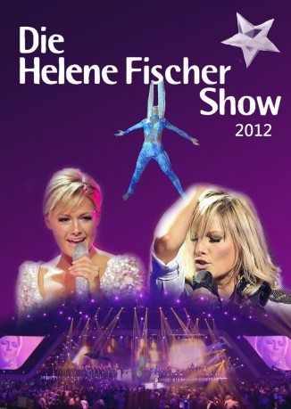

#10459 Helene Fischer Show 2012
 
 IMDB-Wertung: 0.0 / 10
IMDB-Wertung: 0.0 / 10  Metascore: 0
Metascore: 0 
Gäste Helene Fischer Show 2012:
Alive, Buranowski Babuschki, Al Bano, Andrea Bocelli, Nino de Angelo, Elisabeth, Andreas Gabalier, David Garrett, Harlem Gospel Singers, Linda Hesse, Ricky Kam, Loreen, Santiano, Unheilig
Jahr: 2012
Dauer: 177 Minuten
FSK: 0
Land: Deutschland Studio: Tonspuren:
Untertitel:
Auflösung: 720p (1280x716) Größe: 10752 MB
Genre: Musik
Regisseur:
Drehbuch:
Soundtrack:
Darsteller:
Datei: X:\Musik\Helene Fischer Show 2012 (2012, FSK0, 1280x716).mkv seit 10.01.2019
Festplatte: HD Serien(SU-Z)+Dokus+Musik
 Es gibt insgesamt 134 Filme in der Gruppe 'Musik'
Es gibt insgesamt 134 Filme in der Gruppe 'Musik'